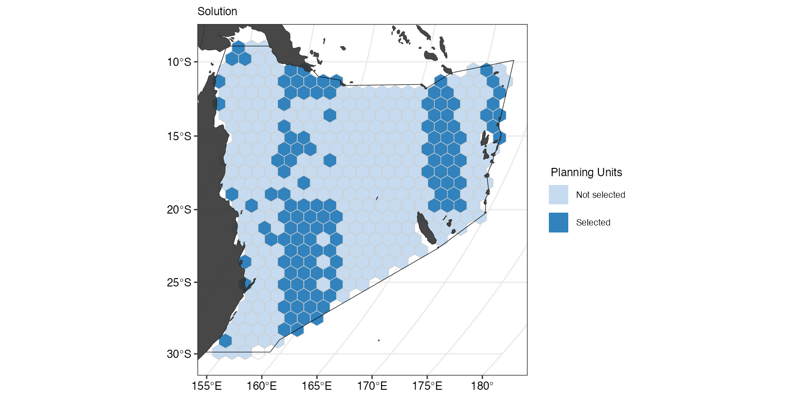
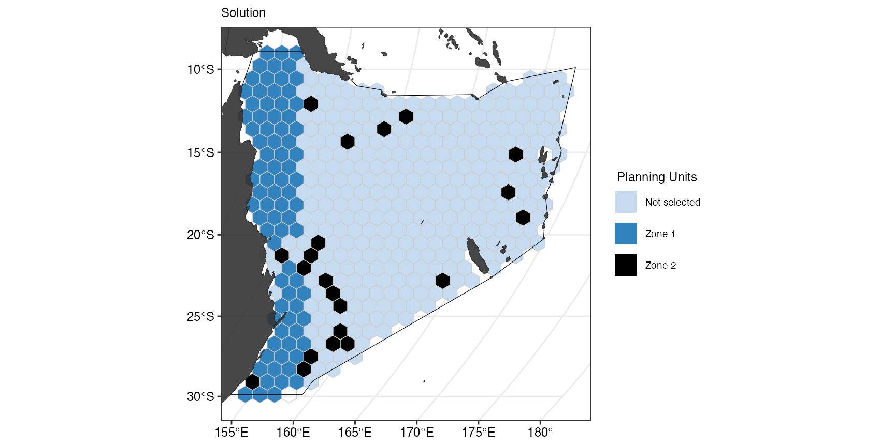
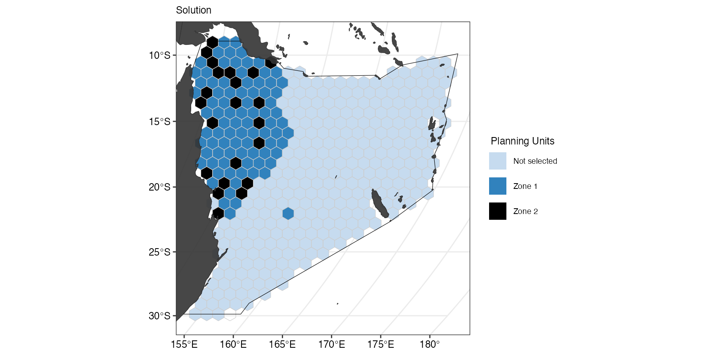
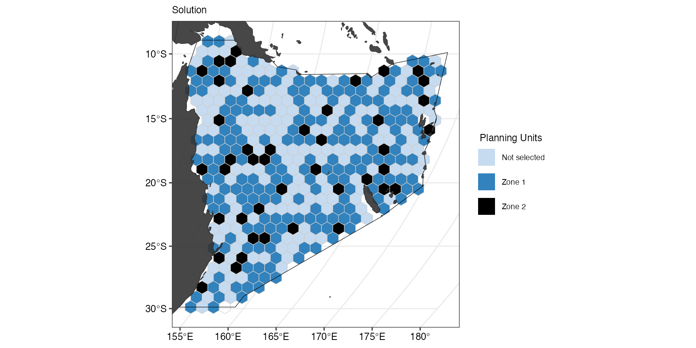

library(spatialplanr)
set.seed(100)Overview
This code has been written to simplify the process for running a prioritizr analysis on a given region. It is still a work in progress so feel free to submit pull requests with new features and code improvements.
The workflow shown here was based on the prioritizr
introduction to zones.
Set user parameters
Region <- "Coral Sea" # "Australia"
Type <- "Oceans" # "EEZ"Set the shape and area of the planning unit in square kilometres.
PU_size <- 10000 # km2Choose CRS for analysis. Here we use Mollweide
cCRS <- "ESRI:54009"Analysis Region
Start your analysis by defining your region and setting up the planning units.
Get the boundary for your chosen region.
Bndry <- splnr_get_boundary(Limits = Region, Type = Type, cCRS = cCRS)
#> Reading layer `ne_10m_geography_marine_polys' from data source
#> `/private/var/folders/_r/mcmw_qtn0m7cd23cbdqfszl40000gp/T/RtmpoXT6iy/ne_10m_geography_marine_polys.shp'
#> using driver `ESRI Shapefile'
#> Simple feature collection with 306 features and 37 fields
#> Geometry type: MULTIPOLYGON
#> Dimension: XY
#> Bounding box: xmin: -180 ymin: -85.19206 xmax: 179.9999 ymax: 90
#> Geodetic CRS: WGS 84
landmass <- rnaturalearth::ne_countries(
scale = "medium",
returnclass = "sf"
) %>%
sf::st_transform(cCRS)Create Planning Units
PUs <- spatialgridr::get_grid(area_polygon = Bndry,
projection_crs = cCRS,
option = "sf_hex",
resolution = PU_size,
sf_method = "centroid")We can also use a customised ggplot theme that can be
passed as a list to splnr_gg_add() and that can then be
used for all plots. For example:
splnr_theme <- list(
ggplot2::theme_bw(),
ggplot2::theme(
legend.position = "right",
legend.direction = "vertical",
text = ggplot2::element_text(size = 9, colour = "black"),
axis.text = ggplot2::element_text(size = 9, colour = "black"),
plot.title = ggplot2::element_text(size = 9),
axis.title = ggplot2::element_blank()
)
)Get the features
For our example, we will use a small subset of charismatic megafauna species of the Coral Sea to inform the conservation plan. We filtered the Aquamaps (Aquamaps.org) species distribution models for our study area for the following species:
Dict <- tibble::tribble(
~nameCommon, ~nameVariable, ~category,
"Green sea turtle", "Chelonia_mydas", "Reptiles",
"Loggerhead sea turtle", "Caretta_caretta", "Reptiles",
"Hawksbill sea turtle", "Eretmochelys_imbricata", "Reptiles",
"Olive ridley sea turtle", "Lepidochelys_olivacea", "Reptiles",
"Saltwater crocodile", "Crocodylus_porosus", "Reptiles",
"Humpback whale", "Megaptera_novaeangliae", "Mammals",
"Common Minke whale", "Balaenoptera_acutorostrata",
"Mammals",
"Dugong", "Dugong_dugon", "Mammals",
"Grey nurse shark", "Carcharias_taurus", "Sharks and rays",
"Tiger shark", "Galeocerdo_cuvier", "Sharks and rays",
"Great hammerhead shark", "Sphyrna_mokarran",
"Sharks and rays",
"Giant oceanic manta ray", "Mobula_birostris", "Sharks and rays",
"Reef manta ray", "Mobula_alfredi", "Sharks and rays",
"Whitetip reef shark", "Triaenodon_obesus", "Sharks and rays",
"Red-footed booby", "Sula_sula", "Birds"
)These species were not chosen based on their importance for this region and only represent an example for visualization purposes.
Note: The structure of the tribbleabove
is required for some of the downstream plotting. Common denotes
the common name of a species, Scientific the scientific name in
the format used by Aquamaps, Category is the category that a
species belongs to and Class represents the importance of the
species for the conservation plan.
Convert the probabilities to binary data and feature names
datEx_species_bin <- spDataFiltered %>%
splnr_apply_cutoffs(Cutoffs = 0.5)
col_name <- spDataFiltered %>%
sf::st_drop_geometry() %>%
dplyr::select(-"cellID") %>%
colnames()Spatial planning including zones
So far, all steps were exactly the same as in a spatial plan that does not include zones. To have a direct comparison, we will first run a spatial plan that does not include zoning. For this, we will define targets for our features (here: 30% for all features) and create a conservation problem where we include an area-based cost in our prioritisation.
target <- rep(0.3, nrow(Dict))
p1 <- prioritizr::problem(
datEx_species_bin %>% dplyr::mutate(Cost1 = rep(1, 397)),
col_name,
"Cost1"
) %>%
prioritizr::add_min_set_objective() %>%
prioritizr::add_relative_targets(target) %>%
prioritizr::add_binary_decisions() %>%
prioritizr::add_default_solver(verbose = FALSE)We then solve the problem and plot the solution.
s1 <- p1 %>%
prioritizr::solve.ConservationProblem()
(ggSoln <- splnr_plot_solution(s1) +
splnr_gg_add(PUs = PUs, Bndry = Bndry, overlay = landmass, cropOverlay = PUs, ggtheme = splnr_theme))
We can also have a look at how well the set target was met.
s1T <- s1 %>%
dplyr::select(tidyselect::starts_with(c("solution"))) %>%
sf::st_drop_geometry() %>%
tibble::as_tibble()
r1 <- prioritizr::eval_feature_representation_summary(p1, s1T)
print(r1)
#> # A tibble: 15 × 5
#> summary feature total_amount absolute_held relative_held
#> <chr> <chr> <dbl> <dbl> <dbl>
#> 1 overall Chelonia_mydas 22 10 0.455
#> 2 overall Caretta_caretta 22 10 0.455
#> 3 overall Eretmochelys_imbricata 24 10 0.417
#> 4 overall Lepidochelys_olivacea 22 10 0.455
#> 5 overall Crocodylus_porosus 21 9 0.429
#> 6 overall Megaptera_novaeangliae 388 120 0.309
#> 7 overall Balaenoptera_acutorostrata 238 74 0.311
#> 8 overall Dugong_dugon 13 5 0.385
#> 9 overall Carcharias_taurus 22 10 0.455
#> 10 overall Galeocerdo_cuvier 36 14 0.389
#> 11 overall Sphyrna_mokarran 397 123 0.310
#> 12 overall Mobula_birostris 20 8 0.4
#> 13 overall Mobula_alfredi 20 8 0.4
#> 14 overall Triaenodon_obesus 25 10 0.4
#> 15 overall Sula_sula 13 5 0.385We will now look how this spatial plan needs to be extended to
include multiple management zones by using zones().
Different cost layers
We first assume that we have to zones of interest that have the same set of features, but separate cost layers. For this, we need to set targets for both zones, in our case 20% for all features in the first zone and 5% of all features in the second zone.
We then create a zones object where we specify the
number of zones and the features in the zone. Here, we define two zones
that both have the same features.
z2 <- prioritizr::zones("zone 1" = col_name, "zone 2" = col_name)Both zones need a specified cost and targets. We use one area-based
cost and one cost layer that uses random numbers, the pre-defined
targets and pass the zonesobject to the problem formulation
before solving the conservation problem.
p2 <- prioritizr::problem(
datEx_species_bin %>% dplyr::mutate(
Cost1 = rep(1, 397), # when giving sf input, we need as many cost columns as we have zones
Cost2 = runif(n = dim(.)[[1]])
),
z2,
cost_column = c("Cost1", "Cost2")
) %>%
prioritizr::add_min_set_objective() %>%
prioritizr::add_relative_targets(target2) %>%
prioritizr::add_binary_decisions() %>%
prioritizr::add_default_solver(verbose = FALSE)
s2 <- p2 %>%
prioritizr::solve.ConservationProblem()The solution can be plotted using the function
splnr_plot_solution() with the argument zones
set to TRUE.
(gg_s2 <- splnr_plot_solution(
s2,
zones = TRUE,
colorVals = c("#c6dbef", "#3182bd", "black"),
legendLabels = c("Not selected", "Zone 1", "Zone 2")
) +
splnr_gg_add(
PUs = PUs, Bndry = Bndry, overlay = landmass,
cropOverlay = PUs, ggtheme = splnr_theme
))
We can see that we now how planning units that are not selected, and planning units that have either been selected for zone 1 or zone 2.
Different features
When using sf objects with zones(), the
input feature names to zones() need to have the same length
and contain the same features. This means that both zones have the same
features, but for some that are not of interest in that specific zone,
the target is set to 0. For example, if we want to separate the example
data in a zone for reptiles and another zone containing all other taxa
that are not reptiles, we can specify the following targets:
targets2b <- Dict %>%
dplyr::mutate(
targetZ1 = dplyr::if_else(category == "Reptiles", 30 / 100, 0),
targetZ2 = dplyr::if_else(category != "Reptiles", 10 / 100, 0)
) %>%
dplyr::select("targetZ1", "targetZ2") %>%
as.matrix()This sets the target for reptiles in the first zone to 30% and the rest to 0%. In the second zone, the targets for non-reptiles is 10% and for reptiles it is 0% because they are not of interest in this zone. Target data has to be given in a matrix when working with zones, so we transform the data frame to a matrix at the end.
We then define the conservation problem in the same way as above and solve it.
# NOTE: when using sf input, we need as many cost columns as we have zones
p2b <- prioritizr::problem(
datEx_species_bin %>% dplyr::mutate(
Cost1 = rep(1, 397),
Cost2 = runif(n = dim(.)[[1]])
),
z2,
cost_column = c("Cost1", "Cost2")
) %>%
prioritizr::add_min_set_objective() %>%
prioritizr::add_relative_targets(targets2b) %>%
prioritizr::add_binary_decisions() %>%
prioritizr::add_default_solver(verbose = FALSE)
s2b <- p2b %>%
prioritizr::solve.ConservationProblem()We can then also look at how well these targets are met in each zone (and combined).
r2b <- s2b %>%
dplyr::select(tidyselect::starts_with(c("solution"))) %>%
sf::st_drop_geometry() %>%
tibble::as_tibble() %>%
prioritizr::eval_feature_representation_summary(p2b, .)
print(r2b, n = 45)
#> # A tibble: 45 × 5
#> summary feature total_amount absolute_held relative_held
#> <chr> <chr> <dbl> <dbl> <dbl>
#> 1 overall 1 44 11 0.25
#> 2 overall 2 44 11 0.25
#> 3 overall 3 48 11 0.229
#> 4 overall 4 44 11 0.25
#> 5 overall 5 42 11 0.262
#> 6 overall 6 776 43 0.0554
#> 7 overall 7 476 26 0.0546
#> 8 overall 8 26 7 0.269
#> 9 overall 9 44 11 0.25
#> 10 overall 10 72 13 0.181
#> 11 overall 11 794 48 0.0605
#> 12 overall 12 40 11 0.275
#> 13 overall 13 40 11 0.275
#> 14 overall 14 50 12 0.24
#> 15 overall 15 26 8 0.308
#> 16 zone 1 1 22 8 0.364
#> 17 zone 1 2 22 8 0.364
#> 18 zone 1 3 24 8 0.333
#> 19 zone 1 4 22 8 0.364
#> 20 zone 1 5 21 8 0.381
#> 21 zone 1 6 388 4 0.0103
#> 22 zone 1 7 238 2 0.00840
#> 23 zone 1 8 13 5 0.385
#> 24 zone 1 9 22 8 0.364
#> 25 zone 1 10 36 8 0.222
#> 26 zone 1 11 397 8 0.0202
#> 27 zone 1 12 20 8 0.4
#> 28 zone 1 13 20 8 0.4
#> 29 zone 1 14 25 8 0.32
#> 30 zone 1 15 13 6 0.462
#> 31 zone 2 1 22 3 0.136
#> 32 zone 2 2 22 3 0.136
#> 33 zone 2 3 24 3 0.125
#> 34 zone 2 4 22 3 0.136
#> 35 zone 2 5 21 3 0.143
#> 36 zone 2 6 388 39 0.101
#> 37 zone 2 7 238 24 0.101
#> 38 zone 2 8 13 2 0.154
#> 39 zone 2 9 22 3 0.136
#> 40 zone 2 10 36 5 0.139
#> 41 zone 2 11 397 40 0.101
#> 42 zone 2 12 20 3 0.15
#> 43 zone 2 13 20 3 0.15
#> 44 zone 2 14 25 4 0.16
#> 45 zone 2 15 13 2 0.154We can see that each of the 15 features is listed (as a number) for
an overall summary, summary for zone 1 and summary for zone 2. When
looking at the relative_held column in the
tibble, we observe that in the summary of zone 1 (from row
16 onwards), some features have >30% targets met, whereas others
(such as feature 6 and 7) have a very low percentage of suitable habitat
within selected planning units. We can extract the common names of those
two features:
Dict[[1]][6]
#> [1] "Humpback whale"
Dict[[1]][7]
#> [1] "Common Minke whale"They are both marine mammals and thus had a target of 0% in zone 1 that was the reptile-specific zone. The percentage of selected suitable habitat is not 0% despite the target of 0 because a proportion of suitable habitat of mammals was selected incidentally when selecting planning units in this zone by meeting the targets for reptiles. The same applies for zone 2. We can also plot the final solution again:
(gg_s2b <- splnr_plot_solution(
s2b,
zones = TRUE,
colorVals = c("#c6dbef", "#3182bd", "black"),
legendLabels = c("Not selected", "Zone 1", "Zone 2")
) +
splnr_gg_add(
PUs = PUs, Bndry = Bndry, overlay = landmass,
cropOverlay = PUs, ggtheme = splnr_theme
))Boundary penalty
Similar to “normal” priritisations, zones also allows including a boundary penalty. There are several options how this can be done within zones or between zones.
Within the same zone
The zeros in this matrix denote that there is no penalty between zones, whereas ones introduce a boundary penalty when we define the conservation problem. Here, we only introduce penalties within zone 1 AND zone 2 respectively.
p3 <- prioritizr::problem(
datEx_species_bin %>% dplyr::mutate(
Cost1 = rep(1, 397), # when giving sf input, we need as many cost columns as we have zones
Cost2 = runif(n = dim(.)[[1]])
),
z2,
cost_column = c("Cost1", "Cost2")
) %>%
prioritizr::add_min_set_objective() %>%
prioritizr::add_boundary_penalties(0.5, zone = zm1) %>%
prioritizr::add_relative_targets(target2) %>%
prioritizr::add_binary_decisions() %>%
prioritizr::add_default_solver(time_limit = 10, verbose = FALSE)
s3 <- p3 %>%
prioritizr::solve.ConservationProblem()With add_boundary_penalties() we set a penalty of 0.5
between the zones we defined in zm1. For the purpose of
this example, we also set a 10 second time limit for the prioritisation.
The results show less fragmentation than in the previous solution
without penalties:
(gg_s3 <- splnr_plot_solution(
s3,
zones = TRUE,
colorVals = c("#c6dbef", "#3182bd", "black"),
legendLabels = c("Not selected", "Zone 1", "Zone 2")
) +
splnr_gg_add(
PUs = PUs, Bndry = Bndry, overlay = landmass,
cropOverlay = PUs, ggtheme = splnr_theme
))A boundary penalty can also be introduced to only one zone:
zm2 <- zm1
zm2[2, 2] <- 0
# NOTE: When using sf input, we need as many cost columns as we have zones
p4 <- prioritizr::problem(
datEx_species_bin %>% dplyr::mutate(
Cost1 = rep(1, 397),
Cost2 = runif(n = dim(.)[[1]])
),
z2,
cost_column = c("Cost1", "Cost2")
) %>%
prioritizr::add_min_set_objective() %>%
prioritizr::add_boundary_penalties(0.5, zone = zm2) %>%
prioritizr::add_relative_targets(target2) %>%
prioritizr::add_binary_decisions() %>%
prioritizr::add_default_solver(time_limit = 10, verbose = FALSE)
s4 <- p4 %>%
prioritizr::solve.ConservationProblem()
(gg_s4 <- splnr_plot_solution(
s4,
zones = TRUE,
colorVals = c("#c6dbef", "#3182bd", "black"),
legendLabels = c("Not selected", "Zone 1", "Zone 2")
) +
splnr_gg_add(
PUs = PUs, Bndry = Bndry, overlay = landmass,
cropOverlay = PUs, ggtheme = splnr_theme
))
Across zones
Similarly, penalties can be applied between zones if specified in the problem.
p5 <- prioritizr::problem(
datEx_species_bin %>% dplyr::mutate(
Cost1 = rep(1, 397), # when giving sf input, we need as many cost columns as we have zones
Cost2 = runif(n = dim(.)[[1]])
),
z2,
cost_column = c("Cost1", "Cost2")
) %>%
prioritizr::add_min_set_objective() %>%
prioritizr::add_boundary_penalties(0.5, zone = zm3) %>%
prioritizr::add_relative_targets(target2) %>%
prioritizr::add_binary_decisions() %>%
prioritizr::add_default_solver(time_limit = 10, verbose = FALSE)
s5 <- p5 %>%
prioritizr::solve.ConservationProblem()
(gg_s5 <- splnr_plot_solution(
s5,
zones = TRUE,
colorVals = c("#c6dbef", "#3182bd", "black"),
legendLabels = c("Not selected", "Zone 1", "Zone 2")
) +
splnr_gg_add(
PUs = PUs, Bndry = Bndry, overlay = landmass,
cropOverlay = PUs, ggtheme = splnr_theme
))
Adding constraints
Another addition often used in conservation planning are constraints. We often lock in or lock out areas of interest for various reasons. In this example, we will lock in already existing MPAs in one of the zones.
When using zones with constraints, we use the prioritizr
function add_manual_locked_constraints() that requires the
input to be in a specific format, so we first prepare the MPA data.
mpas <- MPAsCoralSea %>%
dplyr::mutate(zone = "zone 1") %>%
dplyr::rename(
pu = cellID,
status = wdpa
) %>%
sf::st_drop_geometry() %>%
tibble::tibble() %>%
dplyr::filter(status == 1)We need to specify which zone the constraint should be applied to, give information on the planning unit identifier, rename the column of interest to “status” and filter out only the planning units that should be locked in.
# NOTE: When using sf input, we need as many cost columns as we have zones
p6 <- prioritizr::problem(
datEx_species_bin %>% dplyr::mutate(
Cost1 = rep(1, 397),
Cost2 = runif(n = dim(.)[[1]])
),
z2,
cost_column = c("Cost1", "Cost2")
) %>%
prioritizr::add_min_set_objective() %>%
prioritizr::add_manual_locked_constraints(mpas) %>%
prioritizr::add_relative_targets(target2) %>%
prioritizr::add_binary_decisions() %>%
prioritizr::add_default_solver(time_limit = 10, verbose = FALSE)
s6 <- p6 %>%
prioritizr::solve.ConservationProblem()The results can the be visualized again:
(gg_s6 <- splnr_plot_solution(
s6,
zones = TRUE,
colorVals = c("#c6dbef", "#3182bd", "black"),
legendLabels = c("Not selected", "Zone 1", "Zone 2")
) +
splnr_gg_add(
PUs = PUs, Bndry = Bndry,
lockedInAreas = MPAsCoralSea, colInterest = MPAsCoralSea$wdpa,
Type = "Full", colorLI = "red", alphaLI = 0.2, overlay = landmass,
cropOverlay = PUs, ggtheme = splnr_theme, labelL = "Current MPAs"
))Objective functions
So far we have only used the minimum set objective function to meet
all conservation targets whilst minimizing the cost. However, this is
not the only objective function available in prioritizr.
For example when maximising mangrove ecosystem services, we employed a
minimum shortfall objective function instead (Dabalà
et al 2022). For this objective function, we allocate a budget that
cannot be exceeded (for example area >30%) whilst still trying to
minimise the cost and meeting the targets - but not all targets might be
met (shortfall).
Zones also works with objective functions other than the minimum set objective function.
# NOTE: When using sf input, we need as many cost columns as we have zones
p7 <- prioritizr::problem(
datEx_species_bin %>% dplyr::mutate(
Cost1 = rep(1, 397),
Cost2 = runif(n = dim(.)[[1]])
),
z2,
cost_column = c("Cost1", "Cost2")
) %>%
prioritizr::add_min_shortfall_objective(c(8, 0.3)) %>%
prioritizr::add_relative_targets(target2) %>%
prioritizr::add_binary_decisions() %>%
prioritizr::add_default_solver(time_limit = 10, verbose = FALSE)Here we apply add_min_shortfall_objective() and provide
to separate budgets for the two zones (8 and 0.3). We can visualize the
output again after solving the conservation problem.
s7 <- p7 %>%
prioritizr::solve.ConservationProblem()
(gg_s7 <- splnr_plot_solution(
s7,
zones = TRUE,
colorVals = c("#c6dbef", "#3182bd", "black"),
legendLabels = c("Not selected", "Zone 1", "Zone 2")
) +
splnr_gg_add(
PUs = PUs, Bndry = Bndry, overlay = landmass,
cropOverlay = PUs, ggtheme = splnr_theme
))Alternative: linear constraints
Sometimes a spatial plan might be needed that requires minimising several costs at once, but a binary output (inside the protected area/outside the protected area) is sufficient. In this case, using linear constraints instead of zones might be a simpler and more time-efficient way forward.
Linear constraints make sure that all planning units in the selected area meet the criteria given in the constraint. For example, when using an area-based cost (lowest number of planning units to meet the target), we might also simultaneously want to minimise the cost to fisheries and keep it below a certain threshold. Inversely, we might want to minimise the cost to fisheries but also not select more than 30% of the area.
In our example, we fill first define our targets and a random cost layer with values ranging from 0 to 1.
target8 <- rep(0.3, nrow(Dict))
set.seed <- 10 # Add seed so the problem below solves each time
costRandom <- datEx_species_bin %>%
dplyr::mutate(CostR = runif(n = dim(.)[[1]])) %>%
dplyr::select("CostR")We then define and solve our conservation problem:
p8 <- prioritizr::problem(
datEx_species_bin %>% dplyr::mutate(Cost1 = rep(1, 397)),
col_name,
"Cost1"
) %>%
prioritizr::add_min_set_objective() %>%
prioritizr::add_relative_targets(target8) %>%
prioritizr::add_linear_constraints(sum(costRandom$CostR) * 0.1,
sense = "<=", costRandom$CostR
) %>%
prioritizr::add_binary_decisions() %>%
prioritizr::add_default_solver(verbose = FALSE)
s8 <- p8 %>%
prioritizr::solve.ConservationProblem()Based on the problem definition, we want to meet the targets for our
biodiversity features whilst selecting the lowest number of planning
units possible. However, the solution also depends on the threshold of
the linear constraint specified with
add_linear_constraints()in the problem. Specifically, the
planning units selected in the solution can not exceed 10% of the total
cost of all planning units in costRandom$CostR.
We can visualise the solution again:
(gg_s8 <- splnr_plot_solution(s8) +
splnr_gg_add(PUs = PUs, Bndry = Bndry, overlay = landmass, cropOverlay = PUs, ggtheme = splnr_theme))NOTE: We can also use multiple linear constraints in
the same plan, however, this might require a normalization of the input
data to have the constraints in comparable units, and a careful tuning
of the thresholds, so prioritizr is still able to solve the
problem.
Common targets across zones
Sometimes it might be required to meet a (common) conservation target across multiple zones, so several zones contribute to reaching the target. For this, we need to define a target across zones (here: 30% of all features across zones):
targetAcross <- dplyr::tibble(
feature = col_name,
zone = list(c("zone1", "zone2"))[rep(1, length(col_name))],
target = rep(0.3, length(col_name)),
type = rep("relative", length(col_name))
)We then need to bring our data in a specific format that requires us
to have an individual column for a feature in a specific zone, so if we
have spp1 and two zones (zone1 an
zone2), then we have to have two separate columns of the
input data: spp1_zone1 and spp1_zone2. The
species names and zone names have to be exactly those specified in the
zones() object and have to separated by a
_.
datSpecZone1 <- datEx_species_bin %>%
sf::st_drop_geometry() %>%
dplyr::rename_at(dplyr::vars(-cellID), ~ paste0(.x, "_zone1"))
featuresZone1 <- datSpecZone1 %>%
dplyr::select(-"cellID") %>%
colnames()
datSpecZone2 <- datEx_species_bin %>%
sf::st_drop_geometry() %>%
dplyr::rename_at(dplyr::vars(-cellID), ~ paste0(.x, "_zone2"))
featuresZone2 <- datSpecZone2 %>%
dplyr::select(-"cellID") %>%
colnames()We also extract the new feature names and then create the
zones object, before joining the two newly created data
frames to an file that will be used in the prioriztisation.
z10 <- prioritizr::zones(
featuresZone1,
featuresZone2,
zone_names = c("zone1", "zone2"),
feature_names = col_name
)
out_sf <- datSpecZone1 %>%
dplyr::left_join(datSpecZone2, by = "cellID") %>%
dplyr::mutate(geometry = datEx_species_bin$geometry) %>%
sf::st_as_sf() %>%
dplyr::mutate(
Cost1 = runif(n = dim(.)[[1]]) * 100,
Cost2 = runif(n = dim(.)[[1]]) * 300
)We can see here that we defined to (random) cost layers with the cost
layer for zone2 being three times as costly as for
zone1.
p10 <- prioritizr::problem(out_sf,
z10,
cost_column = c("Cost1", "Cost2")
) %>%
prioritizr::add_min_set_objective() %>%
prioritizr::add_manual_targets(targetAcross) %>%
prioritizr::add_binary_decisions() %>%
prioritizr::add_default_solver(verbose = FALSE)
s10 <- p10 %>%
prioritizr::solve.ConservationProblem()After setting up and solving the conservation problem, we can have a look at the resulting solution and how well the targets are met.
s10F <- s10 %>%
dplyr::select(tidyselect::starts_with(c("solution"))) %>%
sf::st_drop_geometry() %>%
tibble::as_tibble()
r10 <- prioritizr::eval_feature_representation_summary(p10, s10F)
print(r10)
#> # A tibble: 45 × 5
#> summary feature total_amount absolute_held relative_held
#> <chr> <chr> <dbl> <dbl> <dbl>
#> 1 overall Chelonia_mydas 44 14 0.318
#> 2 overall Caretta_caretta 44 14 0.318
#> 3 overall Eretmochelys_imbricata 48 15 0.312
#> 4 overall Lepidochelys_olivacea 44 14 0.318
#> 5 overall Crocodylus_porosus 42 14 0.333
#> 6 overall Megaptera_novaeangliae 776 234 0.302
#> 7 overall Balaenoptera_acutorostrata 476 146 0.307
#> 8 overall Dugong_dugon 26 10 0.385
#> 9 overall Carcharias_taurus 44 14 0.318
#> 10 overall Galeocerdo_cuvier 72 25 0.347
#> # ℹ 35 more rowsThe overall summary shows that every feature’s suitable habitat was
represented by at least 30% which was the combined target we had set.
However, we can see that features from zone1 were a lot
more frequently selected than zone2 because
zone2 is three times as costly.
(gg_s10 <- splnr_plot_solution(s10,
zones = TRUE,
colorVals = c("#c6dbef", "#3182bd", "black"),
legendLabels = c("Not selected", "Zone 1", "Zone 2")
) +
splnr_gg_add(
PUs = PUs, Bndry = Bndry, overlay = landmass,
cropOverlay = PUs, ggtheme = splnr_theme
))
The plot also reflects the observation above that PUs were more
frequently selected in zone1. What if we wanted to
constrain this, so that zone1 is less often selected and
zone2 more often?
Targets across zones with linear constraints
We can include linear constraints for zone1 above, so
that its area does not exceed 30% of the whole area. For this we need to
create a matrix that contains the data for the constraint that we want
to include. Although we only want to put the linear constraint on
zone1, prioritizr still requires the matrix to
have as many columns as there are zones. Thus, we set the area cost to
1 for zone1 where we want to have the
constraint and to all 0 in zone2 where we do
not want to introduce a linear constraint.
CostArea <- out_sf %>%
dplyr::mutate(
areaCostZone1 = rep(1, 397),
areaCostZone2 = rep(0, 397)
) %>%
sf::st_drop_geometry() %>%
dplyr::select("areaCostZone1", "areaCostZone2") %>%
as.matrix()We then define the conservation problem and add a linear constraint for 30% of the area.
p11 <- prioritizr::problem(out_sf,
z10,
cost_column = c("Cost1", "Cost2")
) %>%
prioritizr::add_min_set_objective() %>%
prioritizr::add_linear_constraints(sum(CostArea[, 1]) * 0.3,
sense = "<=", CostArea
) %>%
prioritizr::add_manual_targets(targetAcross) %>%
prioritizr::add_binary_decisions() %>%
prioritizr::add_default_solver(verbose = FALSE)
s11 <- p11 %>%
prioritizr::solve.ConservationProblem()
s11F <- s11 %>%
dplyr::select(tidyselect::starts_with(c("solution"))) %>%
sf::st_drop_geometry() %>%
tibble::as_tibble()
r11 <- prioritizr::eval_feature_representation_summary(p11, s11F)
print(r11)
#> # A tibble: 45 × 5
#> summary feature total_amount absolute_held relative_held
#> <chr> <chr> <dbl> <dbl> <dbl>
#> 1 overall Chelonia_mydas 44 14 0.318
#> 2 overall Caretta_caretta 44 14 0.318
#> 3 overall Eretmochelys_imbricata 48 15 0.312
#> 4 overall Lepidochelys_olivacea 44 14 0.318
#> 5 overall Crocodylus_porosus 42 14 0.333
#> 6 overall Megaptera_novaeangliae 776 234 0.302
#> 7 overall Balaenoptera_acutorostrata 476 144 0.303
#> 8 overall Dugong_dugon 26 9 0.346
#> 9 overall Carcharias_taurus 44 14 0.318
#> 10 overall Galeocerdo_cuvier 72 24 0.333
#> # ℹ 35 more rowsThe selected planning units are now more equally distributed across zones, which is also observable in the plot:
(gg_s11 <- splnr_plot_solution(
s11,
zones = TRUE,
colorVals = c("#c6dbef", "#3182bd", "black"),
legendLabels = c("Not selected", "Zone 1", "Zone 2")
) +
splnr_gg_add(
PUs = PUs, Bndry = Bndry, overlay = landmass,
cropOverlay = PUs, ggtheme = splnr_theme
))However, we also expect the cost for the spatial plan to be higher than the previous one.
Targets across some (but not all) zones
For this example, we want an target of 30% of all suitable reptile habitat for zone 1 and zone 2. Additionally, we set a target of 20% in zone 2 for marine mammals and a target of 5% for sharks and rays in zone 3.
targetAcrossSome <- Dict %>%
dplyr::mutate(
target = dplyr::case_when(
category == "Reptiles" ~ 30 / 100,
category == "Mammals" ~ 10 / 100,
category == "Sharks and rays" ~ 5 / 100,
TRUE ~ 0
),
zone = dplyr::case_when(
category == "Reptiles" ~ list(c("zone1", "zone2")),
category == "Mammals" ~ list("zone2"),
category == "Sharks and rays" ~ list("zone3"),
TRUE ~ list(c("zone1", "zone2", "zone3"))
),
type = rep("relative", length(col_name))
) %>%
dplyr::rename(feature = "nameVariable") %>%
dplyr::select(-"category", -"nameCommon")We then create a zones object for three different zones:
datSpecZone1 <- datEx_species_bin %>%
sf::st_drop_geometry() %>%
dplyr::rename_at(dplyr::vars(-cellID), ~ paste0(.x, "_zone1"))
featuresZone1 <- datSpecZone1 %>%
dplyr::select(-"cellID") %>%
colnames()
datSpecZone2 <- datEx_species_bin %>%
sf::st_drop_geometry() %>%
dplyr::rename_at(dplyr::vars(-cellID), ~ paste0(.x, "_zone2"))
featuresZone2 <- datSpecZone2 %>%
dplyr::select(-"cellID") %>%
colnames()
datSpecZone3 <- datEx_species_bin %>%
sf::st_drop_geometry() %>%
dplyr::rename_at(dplyr::vars(-cellID), ~ paste0(.x, "_zone3"))
featuresZone3 <- datSpecZone3 %>%
dplyr::select(-"cellID") %>%
colnames()
z12 <- prioritizr::zones(
featuresZone1,
featuresZone2,
featuresZone3,
zone_names = c("zone1", "zone2", "zone3"),
feature_names = col_name
)We then create a joint sf object of all zones and their
respective costs.
# NOTE: When using sf input, we need as many cost columns as we have zones
out_sf <- datSpecZone1 %>%
dplyr::left_join(datSpecZone2, by = "cellID") %>%
dplyr::left_join(datSpecZone3, by = "cellID") %>%
dplyr::mutate(geometry = datEx_species_bin$geometry) %>%
sf::st_as_sf() %>%
dplyr::mutate(
Cost1 = runif(n = dim(.)[[1]]) * 100,
Cost2 = runif(n = dim(.)[[1]]) * 300,
Cost3 = runif(n = dim(.)[[1]]) * 200
)
p12 <- prioritizr::problem(out_sf,
z12,
cost_column = c("Cost1", "Cost2", "Cost3")
) %>%
prioritizr::add_min_set_objective() %>%
prioritizr::add_manual_targets(targetAcrossSome) %>%
prioritizr::add_binary_decisions() %>%
prioritizr::add_default_solver(verbose = FALSE)
s12 <- p12 %>%
prioritizr::solve.ConservationProblem()
s12F <- s12 %>%
dplyr::select(tidyselect::starts_with(c("solution"))) %>%
sf::st_drop_geometry() %>%
tibble::as_tibble()
r12 <- prioritizr::eval_feature_representation_summary(p12, s12F)
print(r12)
#> # A tibble: 60 × 5
#> summary feature total_amount absolute_held relative_held
#> <chr> <chr> <dbl> <dbl> <dbl>
#> 1 overall Chelonia_mydas 66 16 0.242
#> 2 overall Caretta_caretta 66 16 0.242
#> 3 overall Eretmochelys_imbricata 72 17 0.236
#> 4 overall Lepidochelys_olivacea 66 16 0.242
#> 5 overall Crocodylus_porosus 63 16 0.254
#> 6 overall Megaptera_novaeangliae 1164 64 0.0550
#> 7 overall Balaenoptera_acutorostrata 714 44 0.0616
#> 8 overall Dugong_dugon 39 8 0.205
#> 9 overall Carcharias_taurus 66 16 0.242
#> 10 overall Galeocerdo_cuvier 108 19 0.176
#> # ℹ 50 more rows
(gg_s12 <- splnr_plot_solution(
s12,
zones = TRUE,
colorVals = c("#c6dbef", "#3182bd", "navyblue", "black"),
legendLabels = c("Not selected", "Zone 1", "Zone 2", "Zone3")
) +
splnr_gg_add(
PUs = PUs, Bndry = Bndry, overlay = landmass,
cropOverlay = PUs, ggtheme = splnr_theme
))
Next steps
Short-term
- Test for run time of zones compared to a normal prioritisation
- Communicate zones outcomes effectively (e.g. targets, cost overlay etc.)
Longer-term
- How to deal with overlapping zones (at the moment
prioritizrallocates a PU to a single zone) - How to connect climate-smart workflow to zones
- How to handle inputs that would benefit from using different objective functions (e.g. ecosystem services vs biodiversity features)
- Look into some commonly used data sets for multiple use approaches and think about zone-specific costs, constraints, targets etc.
- Define our (and Waitt’s) understanding of what multiple-use is and how we want to implement it (can differ now and in the future)
- EU Horizon 2020 MUSES-project: multiple use/multi-use is “the joint use of resources in close geographic proximity by either a single user or multiple users. It is an umbrella term that covers a multitude of use combinations in the marine realm and represents a radical change from the concept of exclusive resource rights to the inclusive sharing of resources and space by one or more users.”
- Bonnevie et al. 2019: “multi-use is a specific co-location/coexistence where resources are being shared.”
- Schupp et al. 2019: distinguishes between for different types of multi-uses (one of which is co-location)
Types of multiple use in MSP according to Schupp et al. 2019